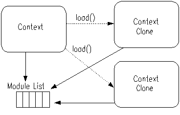

Pnutsのプログラムは、普通は式の列として書かれます。 スクリプトが実行されると、それらの式は１つずつ評価され、最後の式の結果が全体の結果になります。
式 1 式 2 ... 式 n
Pnutsは、明示的なコンパイルを行うことなくJavaクラスを作成することができます。 共通のファイル名拡張子 '.pnc'を持つスクリプトファイルは、そのクラスが必要になったときに、 特別なクラスローダによって、コンパイル、ロードされます。
class A {
int field_1 = 0
int method (parameter){
...
}
}
クラス定義の詳細については「4. クラス定義」を参照。
Pnuts言語のプログラムは式の列です。スクリプトを実行すると、その中の式が順に評価され、最後の式の結果が実行結果になります。
「3. 式」を参照。
変数は任意のオブジェクトを参照します。変数には型がなく、代入を行うことで変数が定義されます。
関数は、関数名、パラメータ・リスト、式の列から定義されます。
関数はファーストクラスのオブジェクトです。つまり、関数を変数に代入することができます。
関数は、名前とパラメータ数で識別され、いずれかが異なる関数を複数同時に定義することができます。同じスコープでおなじ名前の関数(1つとはかぎらない)は一つのグループとして関数名で参照されます。関数を呼び出すために、関数の名前と括弧で括った実引数の列を与えると、まずその名前の関数グループを参照し、引数の数が合致する関数定義を検索します。見つかればその関数定義が実行されます。
関数はネストすることができ、変数のスコープとしてレキシカルスコープを持ちます。
function f(){
x = 0
function set(value) x = value
function get() x
::set = set
::get = get
}
f()
set(100)
get() --> 100
f()
get() --> 0
function inc(x) ++x function abs(x) if (x < 0) -x else x function compose (f1, f2) return (function (x) f1(f2(x))) compose(inc, abs)(-100) --> 101 compose(abs, inc)(-100) --> 99
パッケージは名前空間を作ります。関数や変数はあるパッケージに属します。そして、常にあるパッケージが一つ選択された状態になっており、カレントパッケージと呼ばれます.
関数は定義されたときのパッケージで実行されます。
パッケージはそれぞれ親パッケージを持つことができます。パッケージ変数に対して読み込みが行われるとき、その変数がそのパッケージで定義されている場合はその値を返しますが、定義されていない場合は、Pnutsの実行環境はその親パッケージからその変数を探します。
パッケージの階層は、パッケージ変数に対する書き込みには関係ありません。あるパッケージでの代入は、親のパッケージには影響をおよぼしません。
パッケージ階層の最上部、つまり親のないパッケージはルート・パッケージと呼ばれます。システム中に一つだけグローバル・パッケージと呼ばれるルート・パッケージがあり、デフォルトのカレント・パッケージになります。
コンテクスト とは、Pnuts の実行環境の内部的なデータを保持するオブジェクトです。スクリプトの実行を開始するときに作成され、実行が終了するまで同じコンテクストが使われます。ただし、スクリプトから別のスクリプトを呼び出した場合には、コンテクストのクローンが作られて、呼び出されたスクリプトではクローンの方が使われます。
モジュールとは、再利用性可能なスクリプトを部品化するためのしくみです。 ユーザは必要なモジュールを組込み関数use()で指定するだけで、そのモジュールが用意する機能を利用することができます。
各モジュールは通常別々のJARファイルにパッケージ化されます。そして、そのJARファイルはCLASSPATHに追加されるか${PNUTS_HOME}/modules/にコピーしておきます。
Pnutsインタープリタの中では、モジュールは、名前空間を形成する"パッケージ"の拡張として実装されます。モジュールが定義(公開)する関数やオブジェクトは、あるパッケージに定義されます。通常のパッケージに定義された名前は、そのパッケージがカレント・パッケージの時にはその名前で参照できますが、様々なパッケージに様々な名前が定義されていた場合、各々の名前を参照するためにカレント・パッケージを変更するのはとてもたいへんです。モジュールに定義される名前は、カレント・パッケージに関らず、そのモジュールを利用中のときに、その名前で参照できます。
初期化スクリプト
モジュールを登録するとき、指定したモジュールに対応した初期化スクリプト が読み込まれます。 モジュールが定義する名前(関数)は、初期化スクリプトを読み込んだ時点で定義済になるか、あるいは、autoload()を使って、参照時に定義されるようにしなければなりません。
パッケージ名を"::" か "." で区切った文字列の後ろに "/init" をつけたものが初期化スクリプトの名前になります。たとえば、パッケージ名が "a.b.c" の場合、"a/b/c/init" という名前のスクリプトが読み込まれます。
エクスポートされるシンボル
デフォルトの振舞いとして、シンボルが同じ名前の関数を参照している場合に、そのシンボルが自動的にエクスポートされます。
Pnuts APIを使うと、モジュールの作成者はエクスポートされるシンボルを定義することができます。
名前の衝突
複数のモジュールで同じ名前の関数が登録された場合は、後で登録されたモジュールが優先されます。
モジュールとコンテクストの関係
コンテクストは、一つずつ追加されたモジュールを、モジュール・リストとして保管しています。
通常、モジュール・リストは、コンテクストのクローン間で共有されます。つまり、load(), loadFile()などの関数で呼び出されたスクリプトでは、元のコンテクストのモジュール・リストを利用できますし、また、呼び出されたスクリプトで新たに追加されたモジュールは、元のコンテクストにも反映されます。

複数のモジュールで同じ名前の関数が定義された場合、後で登録したモジュールが優先されます。先に登録されたモジュールの関数は後から登録されたモジュールの関数に隠されてしまうことがあります。同じスクリプトでも実行時のモジュール・リストの状態しだいで動作が異なるのは、多くの場合望ましいことではありません。
この問題を避けるには、モジュールを定義するときには、登録時にどのようなモジュール・リストであるかを仮定してくてもよいように、初期化スクリプトでuse(null)を呼び出し、空の状態のモジュール・リストを作ります。

モジュール・リストが一旦リセットされると、それ以降に登録されるモジュールは、そのコンテクストの新しいモジュールリストに追加されます(元のモジュール・リストには追加されません)。
例えば、モジュールAの初期化スクリプトで、use(null)を呼び出す前でモジュールBをuse()し、呼び出した後でモジュールCをuse()すると、モジュールAを利用するコンテクストではモジュールBも同時に利用できる状態になります(モジュールCは利用できません)。モジュールAの実装ではモジュールCが利用できます(モジュールBは利用できません)。
use(B) use(null) use(C)
モジュールと関数呼び出しの関係
関数は定義時のモジュールリストを使って実行されます。
例えば、次の2つのスクリプトがロードされるとします。
use("pnuts.lib")
function mymap() map()
use("functional")
map --> function map(func, list) // in "functional"
mymap() --> {} // map() in "pnuts.lib"
pnuts.libモジュールとfunctionalモジュールの両方でmap関数が定義されてい ます。 シンボルは定義時のモジュール・リストを使って解決されるため、どちらのスクリプトファイルが 先にロードされても、mymap()が参照するのはpnuts.libモジュールのmapになります。
ローカル・スコープ は、関数内で宣言される変数に対するスコープクラスです。
ローカル・スコープの変数は、関数内で変数に値を代入することで宣言されます。 ローカル・スコープの変数は、その変数を宣言した関数内でのみ使うことができます。
a = 1
function t1(){
a = 0
println(a)
}
t1() // 0
println(a) // 1
条件文の中で宣言されたローカル変数は、実行時に値が代入されない場合はnullに初期化されます。
function t1(){
if (false){
a = 0
}
println(a)
}
function t2(){
while (false){
a = 0
}
println(a)
}
t1() // null
t2() // null
関数が入れ子になっている場合、外側の関数で宣言された変数は、内側の関数で読んだり書いたりすることができます。
a = 1
function t1(){
a = 0
function t2(){
a = 4
}
t2()
println(a + " should be 4")
}
for/foreach文のカウンタ変数のスコープもローカル・スコープに分類されますが、 外側のスコープに影響を与えません。
function t3 (){
a = 2
for (a : 0..9){
println(a)
}
println(a + " should be 2")
}
トップレベル・スコープは、関数の外側で宣言される変数に対するスコープクラスです。 ローカル・スコープで定義されていない変数が参照されると、トップレベル・スコープでその変数が参照されます。
トップレベル・スコープの変数の名前の解決は、次の順序で行われます。
トップレベル・スコープで変数が宣言されると、その変数はカレントパッケージで定義されます。
トップレベル・スコープの変数がローカル・スコープで参照される場合、変数の参照ごとに名前の解決が行われるとはかぎりません。ある実装では、トップレベル・スコープからローカル・スコープに入る直前で変数の解決を行います。また、ある実装では、変数が参照される度に変数を解決します。しかし、その振舞いに頼ったスクリプトを書くべきではありません。
たとえば、次の関数は定義内でimport()を呼んでいますが、トップレベル・スコープからローカル・スコープに入る直前で変数の解決を行う実装では変数の解決に失敗してしまうため、このような使い方は推奨されません。
function foo(){
import("java.util.HashMap")
HashMap()
}
| function | if | else | while | do | for | foreach | switch | case | default | break | new | yield | |
| null | try | catch | finally | continue | return | true | false | instanceof | class | import | macro | throw | static |
// から行末までと、/*と*/の間は無視されます。
文字リテラルは java.lang.Characterオブジェクトを表します。 文字に関する字句規則は Java と同じです。
'A'
'\'' --> ' '\n' --> LF '\t' --> TAB '\r' --> CR '\f' --> ^L '\b' --> ^H '\\' --> \ '\0' --> NUL文字リテラルの中でUnicode のエスケープシーケンスを使うことができます。
'\u0041' --> 'A'
"(ダブルクオート)で囲まれた文字リテラルは文字列リテラルで、java.lang.Stringオブジェクトを表します。
> "foo" "foo" > "\b" "^H"文字列リテラルの一部としてUnicode のエスケープシーケンスを使うことができます。
"\u0041B" --> "AB"\( と \) の間の文字列は式だと解釈され、実行結果が両側の文字列の間に埋め込まれます。
"Date: \(date()\)" ---> "Date: Fri May 11 00:11:31 GMT 2007"
`(バッククオート)で囲まれた文字の列は、どんな文字もエスケープしない文字列リテラルです。
`x = "A"` --> "x = \"A\"" `ABC\` --> "ABC\\"
整数は long 型が表せる範囲に制限されません。値の大きさに応じて数値を表 すクラスが割り当てられます。整数が Integer.MAX_VALUE と Integer.MIN_VALUE の間に ある場合は java.lang.Integer、Long.MAX_VALUE と Long.MIN_VALUE の間にある場合は java.lang.Long、それ以外の場合は java.math.BigInteger オブジェクトになります。
java.math package がサポートされない Personal Java 環境では、long の範囲を越える整数はDouble オブジェクトとして表されます。
("0" | ["1"-"9"] (["0"-"9"])*)
123 12345678901234567890 123L
"#" (["0"-"9","a"-"f","A"-"F"])+
"0" ("X"|"x") (["0"-"9","a"-"f","A"-"F"])+
#ffff #ffff0000 0xff
数値が Byte.MAX_VALUE と Byte.MIN_VALUE の間にある場合、 "#ff" という形式の数は Byte オブジェクトになり、 "0xff" という形式の数は Integer オブジェクトになります。
0777 0177L
浮動小数点数は、java.lang.Doubleまたは、java.lang.Floatで表されます。
123F --> new Float(123.0) 123f --> new Float(123.0) 123D --> new Double(123.0) 123d --> new Double(123.0) 123.0 --> new Double(123.0) 123.0f --> new Float(123.0) 1.23E-4 --> new Double(1.23E-4) 1.23E-4f --> new Float(1.23E-4)
多倍長10進数は、java.math.BigDecimalで表されます。
123.0B --> new BigDecimal("123.0")
123.0E-4B --> new BigDecimal("0.00123")
1.2 * 3 --> 3.5999999999999996
1.2B * 3 --> 3.6
java.math パッケージがサポートされないPersonal Java環境では、'B' は無視されます。
論理値リテラルは、java.lang.Booleanオブジェクトを表します。
- true
- false
クラス・リテラルは、Java言語のクラスを表します。クラス・リテラルは、それ自体は値を持ちません。 new式や、try/catch/finally文のcatch部分で使われます。
java.util.Integer
型リテラルは、Java言語の型を表します。型リテラルは、それ自体は値を持ちません。 キャストやinstanceof式で使われます。 型リテラルは、クラス・リテラルの他、配列型、プリミティブ型を表すことができます。
int int[] java.util.Integer
クラスの参照は次のように行います。
クラスの参照は、java.lang.Class オブジェクトで表されます。
class java.lang.Object --> java.lang.Object class
入れ子の内側のクラスは '$' で区切られた名前で表されます。
class Toplevel$Inner --> Toplevel.Inner class
JDK1.1では、クラスは Pnuts の実行環境を読み込んだクラスローダで検索されます。 J2SE/J2EEでは、システムクラスローダが使われます。ただし、Context.setClassLoader() メソッドで ClassLoader が設定された場合、それがデフォルトのクラスローダになります。
以下の算術演算子は基本的に Java と同じ意味です。
| + | - | * | / | % |
2値演算の型変換表を示します。
| BigDecimal | BigInteger | Double | Float | Long | Integer | Character | Short | Byte | |
| BigDecimal | BigDecimal | BigDecimal | BigDecimal | BigDecimal | BigDecimal | BigDecimal | BigDecimal | BigDecimal | BigDecimal |
| BigInteger | BigDecimal | BigInteger | BigDecimal | BigDecimal | BigInteger | BigInteger | BigInteger | BigInteger | BigInteger |
| Double | BigDecimal | BigDecimal | Double | Double | Double | Double | Double | Double | Double |
| Float | BigDecimal | BigDecimal | Double | Float | Float | Float | Float | Float | Float |
| Long | BigDecimal | BigInteger | Double | Float | Long | Long | Long | Long | Long |
| Integer | BigDecimal | BigInteger | Double | Float | Long | Integer | Integer | Integer | Integer |
| Character | BigDecimal | BigInteger | Double | Float | Long | Integer | Integer | Integer | Integer |
| Short | BigDecimal | BigInteger | Double | Float | Long | Integer | Integer | Integer | Integer |
| Byte | BigDecimal | BigInteger | Double | Float | Long | Integer | Integer | Integer | Integer |
a = 0 ++a --> 1 a --> 1
a = 0 a++ --> 0 a --> 1 a = a++ a --> 1
| == | != | < | <= | > | >= |
両方のパラメータが Number オブジェクトの場合、数の大きさを比較します。
どちらかのパラメータが Numeric オブジェクトでもう一つのパラメータが Numeric か Number の場合、Numeric.compareTo()メソッドで大きさを比較します。
両方のパラメータが String オブジェクトの場合、String.compareTo()メソッドで文字列を比較します。
"AB" > "A" --> true
両方のパラメータが配列の場合、それらの要素を再帰的に比較します。 この場合は == と != のみが有効です。
[1,[2,3]] == [1,[2,3]] --> true
[1,2,3] == [1,2] --> false
どちらかのパラメータがjava.lang.Comparableオブジェクトの場合、Comparable.compareTo()メソッドでオブジェクトを比較します。
その他の場合の比較演算は Object.equals() メソッドでオブジェクトを比較します。 この場合は==と != のみが有効です。
1 == 1 --> true
Object() == Object() --> false
以下の演算子は論理演算子です。
| && | || | ! |
!(1 == 2) --> true 1 == 1 && 2 == 2 --> true 1 == 1 || 1 == 2 --> true
オペランドがbooleanでない場合、booleanへの変換規則で暗黙的にbooleanに変換されます
以下の演算子は Number オブジェクトに対するものです。
| & | | | ~ | ^ | >> | << | <<< |
1 << 100 --> 1267650600228229401496703205376
pnuts_version.startsWith("1.1") ? 1 : 0
| *= | /= | += | -= | %= | &= |
| |= | ~= | ^= | >>= | <<= | <<<= |
これらの演算子は Number オブジェクトに対するものです。
下記と等価。
identifier1 = try {expression[0]} catch (IndexOutOfBoundsException e){}
identifier2 = try {expression[1]} catch (IndexOutOfBoundsException e){}
...
null
[1, 2, 3]
配列は互いに異なる型の要素を持つことができます。
["one", 1, '\u3042', null]
[1, [2, ["yes", "no"], null]] --> new Object[]{
new Integer(1),
new Object[]{
new Integer(2),
new Object[]{
"yes",
"no"
},
null
}
}
type1 = class java.lang.Object[] --> java.lang.Object[] class type2 = int[][] --> int[][] type
array1 = class java.lang.Object[1] --> [null]
array2 = int[3][2] --> [[0, 0], [0, 0], [0, 0]]
array3 = new int[]{1, 2, 3} --> {1, 2, 3}
配列オブジェクトは length というフィールドを持ち、その配列の要素数を表します。
[1, 2, 3].length --> 3
{1, 2, 3}
a = [1, 2, 3] a[0] =--> 1 a[0] = 10 a[0] =--> 10
配列・リストの要素にも代入が可能です。
a = [1, 2, 3] a[0] = 100 a =--> [100, 2, 3]
expressionの値が負の整数 idxの場合で、配列の大きさが lenだとすると、 a[idx] は a[idx + len]と解釈されます。
a = [1, 2, 3] a[-1] => 3 a[-2] => 2 a[-3] => 1 a[-4] => error
startIndexからendIndexまでの範囲を取り出した部分配列を求めます。 startIndexからendIndexまでの範囲が、配列のインデックスの範囲から外れて いる場合や、startIndexがendIndexより大きい場合は、空の配列を返します。
foo = [1, 2, 3] foo[1..] --> [2, 3] foo[1, 1] --> [2]
startIndexからendIndexまでの範囲を取り出した部分文字列を求めます。 startIndexからendIndexまでの範囲が、文字列のインデックスの範囲から外れて いる場合や、startIndexがendIndexより大きい場合は、空の文字列を返します。
foo = "123" foo[1..] --> foo.substring(1) --> "23" foo[1..1] --> foo.sunstring(1, 2) --> "2"
foo = "123" foo[1] --> foo.charAt(1) --> '2'
1つ以上の（キー=>値）のマッピングがこの式に与えられると、そのマッピングを含むjava.util.HashMapオブジェクトが作られて返されます。
{ "name"=>"Sae", "age" => 1 }
Java2の環境では、java.util.Mapオブジェクトのキーをブラケット[]で囲みと、対応する値にアクセスできます。
foo = map() foo["age"] = 24 foo["age"] --> 24
targetが、配列、Collection, ジェネレータのいずれかで、predicateが 1引数の関数の場合には、targetの要素のうちpredicateがtrueを返す要素を生成するジェネレータを返します。
x = list([1,2,3])
for (i : x[function (x) x % 2 == 0]) {
println(i)
}
expressionが 論理式の場合には、expressionは1引数の関数に変換され、同様の処理を行ないます。 expressionが、比較演算子をもちいた二項論理式(lval compare_op rval)の場合、lvalのいちばん左の識別子は、targetの要素のフィールドとして解釈されます。
x = list() import java.awt.Button for (i : 1..10) x.add(Button()) x[name == "button0"] --> x[function (i) i.name == "button0"]
x[name == "button0" || name == "button1"] --> x[function (i) (i.name == "button0" || i.name == "button1")]
また、expressionが ! valという単項論理式の場合も、 valのいちばん左の識別子は、targetの要素のフィールドとして解釈されます。
x[!visible] --> x[function (i) !i.visible]
２つのオブジェクトを連結します。
[1, 2, 3] + [4, 5, 6] ---> [1, 2, 3, 4, 5, 6]
結果の配列(またはCollection)は、1番目の配列と同じ型になります。
int[0] + [1, 2, 3] ---> [1, 2, 3]
collection1 と collection2 が Setオブジェクトの場合、 結果は２つの集合の和集合になります。
{1=>2, 2=>3} + {2=>4, 3=>5} --> {1=>2, 2=>4, 3=>5}
foo = "ABC" bar = "DEF" foo + bar ---> "ABCDEF"
最初のオブジェクトの要素のうち、２番目のオブジェクトに含まれないものを 含むCollectionまたは配列を返します。
結果の配列(またはCollection)は、1番目の配列と同じ型になります。
[1,1,1,2] - [1] ---> [2] [1,1,1,2] - [2] ---> [1,1,1] [1,1,1,2] - [1,3] ---> [2]
２つの集合の積集合を返します。
set([1,2]) * set([1,3]) ---> [1]
2つの配列を連結します。
[1, 2, 3] + [4, 5, 6] =--> [1, 2, 3, 4, 5, 6]
結果の配列は、1番目の配列と同じ型になります。したがって、2番目の配列の要素は1番目の配列の要素の型にマッチしなければなりません。
foo = "ABC" bar = "DEF" foo + bar --> "ABCDEF"
class java.awt.Point(10, 20) Point = class java.awt.Point Point(10, 20) import java.awt.Point new Point(10, 20)
class Person {
int age; String name
Person(age, name){
this.age=age; this.name=name
}
}
new式の後に{}で囲まれた0個以上のメソッド定義がくる場合、そのクラスのサブクラスが動的に定義され、インスタンスが生成されます。
import java.awt.event.*
new WindowAdapter(){
windowClosing(e){
e.source.dispose()
}
}
特別な変数'this' がメソッド呼び出しのターゲットとして使われると、Java言語と同様、そのクラスのインスタンスメソッドが呼び出されます。
x = new Object(){
test(){
this.toString()
}
}
x.test()
特別な変数'super' がメソッド呼び出しのターゲットとして使われると、Java言語と同様、スーパークラスのそのメソッドが呼び出されます。
x = new Object(){
toString(){
"blah " + super.toString()
}
}
x.toString()
メソッド定義の中からは、通常の入れ子の関数と同様、レキシカルスコープにアクセスできます。
function test(n){
x = new Object(){
test(){
println(n)
}
}
x.test()
}
test(100)
btn = java.awt.Button {
labal : "OK"
}
btn = new java.awt.Button() btn.labal = "OK" btn
（以下、実験的）特別なセパレータ::が用いられる場合、expression に現れるBean Propertyが変更されるたびに、 その新しい値を使ってfieldNameが再計算されます。
import javax.swing.*
f = JFrame();
f.name = "foo"
btn = JButton {
label :: f.name
}
btn.label --> "foo"
f.name = "bar"
btn.label --> "bar"
また、::の後ろの式がただ一つのBean Property式である場合、値の反映は双方向になります。
btn.label = "zzz" f.name ---> "zzz"
これらはJavaBeansのPropertyChangeListener/PropertyChangeEventの仕組みを使って実現されます。
objectがtypeのインスタンスかどうかを判定して、 true または false を返します。
"hello" instanceof String --> true
type が基本型あるいは基本配列型の場合、expressionの値は適切な型へ変換されます。
expressionの値が typeのインスタンスの場合は、変換されません。
expression の値が type に変換できない場合は ClassCastException が送出されます。
型のキャストが、コンストラクタ、 インスタンスメソッド、または スタティック・メソッド のパラメータになる場合は、 その型の情報を使ってメソッドやコンストラクタを選択します。
これらの変数は、対応するClassオブジェクトと定義されます。
int byte short char long float double boolean
プリミティブ型の Class オブジェクトは、対応するクラスへの変換を行う関数としても利用できます。
expressionが文字列の場合は、左右の空白があればそれを削除し、対応する数に変換します。この場合10進数が仮定されます。 expressionが Number の場合は、指定された型に変換されます。 expressionが文字の場合は、int(), byte(), short() は文字コードを返します。 文字コードがその型が表すことができる範囲を越える場合はエラーになります。
int(" 1 ") --> 1
int('1') --> 49
primitiveが Character で、expressionを評価した結果の整数が 0〜0xffff の範囲である場合、そのコードポイントの文字を返します。範囲外の場合はエラーになります。
char(65) --> 'A'
boolean(true) ---> true
boolean(false) ---> false
boolean(-1) ---> true
boolean(0) ---> false
boolean("non-empty") ---> true
boolean("") ---> false
boolean("false") ---> true
boolean(new Object()) ---> true
boolean(null) ---> false
int, byte, short, longについては、文字列とradixを指定して文字列から整数への変換を行なうことができます。
int("20", 16) --> 32
long("cafebabe", 16) --> 3405691582
インスタンス・フィールドへのアクセスは、基本的にJava Beansのプロパティへのアクセスになります。ただし、expressionが特定のクラスの場合には独自のふるまいになります。
import("java.awt.Button")
btn = Button("hello")
btn.label --> "hello"
インスタンス・フィールドへのアクセスは、Pnuts APIによって柔軟にカスタマイズすることができます。「Java APIアクセスのカスタマイズ」を参照。
参照できるのは public のフィールドのみです。
class java.awt.Color::blue
代入できるのは public のフィールドのみです。
"ABC".length() --> 3 "ABC".getClass() --> java.lang.String class
class java.lang.System::gc() sys = class java.lang.System sys::gc()
int, long 等の Java のプリミティブ型は Number クラスのサブクラスでラップされます。 Java のメソッドがプリミティブ型の値を返す場合、スクリプト側ではラッパーオブジェ クトを受け取ります。Java のメソッドがプリミティブ型のパラメータを受け取る場合、 スクリプト側の実引数はそのシグネチャに合致するように変換されます。
str = "ABCDE" str.charAt(1) --> 'B'
int[], byte[] 等の Java の配列型は、Pnuts でもそのまま扱われます。 Java のメソッドが配列のパラメータを受取り型変換が必要であれば、 メソッドのシグネチャに合致する新しい配列が生成され、そのメソッドに 適用されます。
array = "Hello".toCharArray() --> ['H','e','l','l','o'] array.getClass() --> char[] type String(['H','e','l','l','o']) --> "Hello"
foo = [1, 2, 3]
if (foo.length > 5){
1
} else if (foo.length > 4){
2
} else {
3
} --> 3
value = if (foo.length > 3) 1 else 2
value --> 2
equals() メソッドで比較を行います。
パラメータexpressionを指定しない場合は、"break null" と等価です。
while (sum > 0){
sum = sum - 1
}
x = 0
do {
println(x++)
} while (i < 10)
j = 0
for (i : 0..4){
j = j + i
}
for (; j > 0; j--){
println(j)
}
最初の形式の場合、integerStartからintegerEndまでの整数を1つづつ変化させたものをidentifierに代入してexpression-blockを実行します。
2番目の形式の場合、expressionの型に応じて適当なメソッド呼び出しを行なうことで、expressionの要素を１つずつ取り出したものをidentifierに代入してexpression-blockを実行します。expressionには、次のような型のオブジェクトが指定できます。
for (i : 1..3) print(i) --> 123 for (i : 3..1) print(i) --> 321 for (i : [1, 2, 3]) print(i) --> 123
2番目の形式のバリエーションとして、変数が複数指定されることがあります。その場合、下記の式と等価です。
for (tmp : expression) {
identifier_1 = try { tmp[0]} catch (IndexOutOfBoundsException e){}
...
identifier_N = try { tmp[N-1]} catch (IndexOutOfBoundsException e){}
expression-block
}
foreach i (expr)という式は、for(i:expr)同じ意味です。
sum = 0
foreach i [1, 2, 3] {
sum = sum + i
}
sum --> 6
sum = 0
vec = class java.util.Vector()
vec.addElement(1)
vec.addElement(2)
vec.addElement(3)
foreach i (vec.elements()) {
sum = sum + i
}
sum --> 6
for (i : 0..9){
if (i > 2){
continue
}
println(i)
}
関数の中でreturn した場合はその関数がexpression の値を返します。 トップレベルでreturn を評価した場合は、そのインタプリタセッションが expressionの値を返します。この場合quit(expressoin)と同じはたらきをします。
パラメータexpressionを指定しない場合は、"return null" と等価です。
try {
throw ("blah")
} catch (java.io.IOException e1){
println(1)
} catch (Exception e2){
println(2)
} finally {
println(3)
}
identifier が指定された場合、その名前の関数が定義されます。その場合、関数は名前と引数の数で識別されます。
identifier が省略された場合、ユニークな識別子が自動的に生成されます。
f = function (e) e.getSource().dispose()
{a,b -> a + b} // function (a,b) a + b と同じ
関数のパラメータが一つ以上あって、最後に "[]"がついている場合、その関数は可変長パラメータを持つことになります。
function f(args[]) args f() ---> [] f(1) ---> [1] f(1,2,3) ---> [1, 2, 3] function g(a,b[]) b g(1) ---> [] g(1,2) ---> [2] g(1,2,3) ---> [2,3]
名前のある関数に対して、可変長パラメータを持てる関数は一つだけ定義できます。
function f(args[]) args .. function f(a,b,c[]) c // f(args[])は呼べなくなる f() --> error f(1,2) --> [] f(1,2,3) --> [3] f(1,2,3,4) --> [3,4]
ある関数が呼ばれたとき、パラメータの数の一致する関数が定義されている場合は、たとえ可変長パラメータの関数が定義されていたとしても、その関数が呼ばれます。
function f(args[]) args function f(arg) arg f(1) ---> 1 // f(arg) が優先 f(1,2,3) ---> [1, 2, 3]
単一スコープで、名前が同じで引数の数だけ違う関数を複数定義した場合、一つの関数オブジェクトに結合されます。
function f() 1 function f(a) a x = f x() / ---> 1 x(100) / ---> 100
ローカルスコープ内の入れ子関係にある複数スコープで、名前が同じで引数の数だけ違う関数を複数定義した場合、それらの関数は結合されず、 内側のスコープで外側のスコープの関数が再定義されます。
function scope1(){
function f() 1
function scope2(){
function f(a) a
f() // --> 1
}
scope2()
f() // --> 1
f(100) // --> error
}
トップレベルに定義した関数と同じ名前でローカルスコープに関数が定義される場合、ローカルスコープでの関数呼び出しは、 変数の参照と同様、ローカルスコープ -> トップレベルの順で呼び出し可能な関数を探索します。 ローカルスコープで定義される関数はトップレベルに影響を与えることはありません。
function f() 1
function g(){
function f(a) a
f(100) // --> 100
f() // --> 1
}
f() // --> 1
f(100) // --> not found
参照可能なパッケージ(モジュール)の関数を、違う引数でトップレベルに定義しなおすことができます。この場合は、 元の関数オブジェクトに新しい定義が結合されるのではなく、そのパッケージ内だけで関数が再定義されることになります。
use("pnuts.lib")
function string(a, b){
string(b)
}
function g(){
function string(a, b) string(a) // --> no such function: string (1)
string(1, 2)
}
function g(){
string = string
function string(a, b) string(a + b)
string(1, 2)
}
関数を呼び出すと、仮引数を実引数に置き換えて関数の定義部分が実行されます。
packageNameの中の変数 variable は、そのパッケージ名が正当なPnutsの識別子であれば packageName:: variable で参照できます。
1つ以上'yield'式を含む関数は、呼び出されたときに、関数定義を実行せず、ジェネレータを返します。 ジェネレータの中でyield される値は、for/foreach文によって１つずつ取りだされます。
function integerGenerator(min, max){
for (i: min..max) yield i
}
g = integerGenerator(0, 3) --> generator
for (i : g){
println(i)
}
=--> 0
1
2
3
部分シーケンス・ジェネレータは、generatorが生成するオブジェクトのうち、startIndex番目から(endIndexが指定された場合は)endIndex番目のものを生成するジェネレータを返します。
function g(n){
for(i:0..n) yield i
}
x = g(100)
for (i: x[90..]) println(i)
２つのジェネレータに対する+演算は、generator1 と generator2 を順に使ってオブジェクトを生成する新たなジェネレータを返します。
x = range(1, 10) even = x[function (x) x % 2 == 0] odd = x[function (x) x % 2 != 0] printAll(even + odd)
整数が指定された場合は、ジェネレータが生成するN番目のオブジェクトを求めます。 生成されるオブジェクトがN個未満の場合はnullを返します。
function range(start, end){
for(i:start..end) yield i
}
x = range(1, 100)
x[90] ---> 90
x[200] ---> null
1引数の関数predicateが指定された場合は、生成される各要素のうち、関数がtrueとなる要素のみを生成するジェネレータを返します。
function range(start, end){
for(i:start..end) yield i
}
x = range(1, 100)
list(x[function (x) x < 4]) ---> 1,2,3
expressionが 論理式の場合には、expressionは1引数の関数に変換され、同様の処理を行ないます。 expressionが、比較演算子をもちいた二項論理式(lval compare_op rval)の場合、lvalのいちばん左の識別子は、generatorから生成される要素のフィールドとして解釈されます。 「要素の抽出」を参照。
import java.awt.Button
function buttons(n) {for (i : 1..n) yield(Button())}
x = buttons(10)
printAll(x[name == "button0"])
ジェネレータに対するインスタンス・フィールドへのREADアクセスは、生成される各要素に対してインスタンス・フィールドを参照した結果をそれぞれ生成するジェネレータを返します。「インスタンス・フィールド」を参照。
import java.awt.Button
function buttons(n) {for (i : 1..n) yield(Button())}
x = buttons(10)
printAll(x.name)
ジェネレータに対するインスタンス・フィールドへのWRITEアクセスは、生成される各要素に対してインスタンス・フィールドを変更します。
import java.awt.Button buttons = [Button(),Button(),Button()] function generator(elements) for (i:elements) yield i generator(buttons).name = "new name" printAll(generator(buttons).name)
クラス定義はJava言語に似た方法で記述されます。
Java言語との違いは、
クラス定義ファイルの文法は、以下のように定義されます。
package util
import java.util.*
import java.io.*
class mymap extends TreeMap implements Serializable {
get(key){
if ((v = super.get(key)) == null){
super.put(key, v = set())
}
v
}
}
クラス定義は式として使われることもあります。クラス定義が式として使われる場合、そのクラスは新たに作成されたクラスローダによってロードされます。したがって、他のクラスとの依存関係には注意が必要です。
10個の組み込み関数が用意されています。これらの関数は再定義できません。
| import | package | getContext | throw | catch | use | unuse |
| load | autoload | require | loadFile | eval | defined | quit |
import() は class-literal をJava のクラス名として登録します。 参照した変数が未定義の場合、その名前が import されたクラスであるかどうか検査されます。
class-literalは "java.awt.*"のようなワイルドカードでもかまいません。
初期状態では、"java.lang.*" とデフォルトパッケージ("*")が登 録されています。 クラスは最後に import されたクラスから順に検索されます。 ただし、ワイルドカードが特定のクラス名を上書きすることはありません(例を参照)。
Object --> java.lang.Object class
import("org.omg.CORBA.*")
Object --> org.omg.CORBA.Object interface
import("java.lang.Object")
Object --> java.lang.Object class
import("org.omg.CORBA.*")
Object --> java.lang.Object class
パラメータ class_litralがnullの場合、importされた名前をリセットします
import static はクラスを指定せずに staticフィールドやstaticメソッドにアクセスできるようにします。
import static java.awt.Color.*
blue --> java.awt.Color[r=0,g=0,b=255]
import static java.util.ResourceBundle.*
getBundle("pnuts.lang.pnuts")
import されているクラスとパッケージ名のリストをもとめます。
import() --> ["java.lang.*", "*"]
import("org.omg.CORBA.Object")
import() --> [org.omg.CORBA.Object interface, "java.lang.*", "*"]
import(null)
import() --> []
nameString パッケージに入ります。 nameString パッケージがなければそのパッケージを作ります。 返り値はnullです。
package() --> package ""
a = 1
package("foo") --> enter package "foo"
a --> 1
a = 2
a --> 2
::a --> 1
package("") --> enter package ""
a --> 1
foo::a --> 2
package() --> package ""
function f() 1
package("foo") --> enter package "foo"
f() --> 1
function f() 2
f() --> 2
::f() --> 1
package("") --> enter package ""
f() --> 1
foo::f() --> 2
カレントパッケージを求めます。
package() --> package ""
package("foo")
package() --> package "foo"
package("")
package() --> package ""
package() の結果は pnuts.lang.Package オブジェクトです。
moduleがStringオブジェクトの場合、次の手順でそのモジュールがコンテクストに追加されます。
モジュールが正常に登録されると、デフォルトの動作として、そのモジュールが定義する関数が自動的に公開されます。
use()は、返り値として、モジュールが正常に登録されたかどうかを返します。
package("foo")
function x() 100
use("foo") --> true
x --> function x() 100
moduleがPackageオブジェクトの場合、そのPackageがモジュールとしてマークされて、カレント・コンテクストのモジュール・リストに追加されます。「動的なモジュール」を参照。
moduleがnullの場合、コンテクストのモジュールリストを空にします。 「モジュール・リストの枝分かれ」を参照。
moduleが省略された場合、現在use()されたモジュール名のリストがStringの配列として返されます。
use() --> ["foo"]
モジュールの概念については「モジュール」、モジュールの作り方については「Pnutsユーザーズガイド」を参照。
unuse()は、指定されたモジュールをモジュールリストから削除します。削除された場合はtrueを返します。
Context は Pnuts インタプリタの内部オブジェクトです。 以下の状態を含みます。
getContext() の結果は、pnuts.lang.Context オブジェクトです。
getContext().setOutputStream(System::out)
詳細は Pnuts ユーザーズガイド を参照してください。
loadFile() は、ローカルファイルからスクリプトを読みます。 load() は、クラスローダによってスクリプトを検索し、そのスクリプトを読みます。 どちらも、最後の式の結果を返します。
import()の状態はデフォルトの状態にリセットされた上でスクリプトが実行されます。また、カレントパッケージは、パッケージ階層の一番上のパッケージにセットされた状態でスクリプトが実行されます。
loadFile("/home/my.pnut")
load("examples/pnutsLayout.pnut")
require() は、パラメータに指定したスクリプトが読み込まれていない場合や、最後に読み込まれてから変更があった場合にそれを読み込みます。
autoload() は、シンボルとスクリプトのマッピングをカレントパッケージに登録します。そのパッケージでシンボルをアクセスした時に未定義であった場合に、対応するスクリプトが読み込まれます。
詳細は Pnuts ユーザーズガイド を参照してください。
foo = "YES"
eval("foo.length()") --> 3
packageが指定された場合は、そのパッケージをカレントパッケージとする Context が作られ、その Context で式を評価します。
eval("a = 100", "pkg")
pkg::a --> 100
throw() は exception に指定された例外か、文字列stringが指定された場合はRuntimeExceptionを送出します。
throw("be careful")
throw(FileNotFoundException())
throw new java.io.IOException("message")
catch() は、現在のスタックフレームに例外ハンドラを定義します。登録された例外が送出されると、対応するハンドラが実行され、実行中の関数はただちにハンドラの結果を返します。
例外ハンドラのスコープは変数のスコープと同じです。
function func(){
catch(FileNotFoundException, function (e) "Don't care")
println(1)
FileInputStream("file doesn't exist")
println(2)
}
> func()
1
"Don't care"
> FileInputStream("file doesn't exist")
java.io.FileNotFoundException : "file doesn't exist"
function が null の場合、その例外ハンドラがキャンセルされます。
tryFunctionとfinallyFunctionが指定された場合、まずtryFunction()を実行し、その結果に関らず、finallyFunction()を実行します。つまり、次の式と同じです。
try {
tryFunction()
} finally {
functionFunction()
}
finallyFunctionのみが指定された場合、現在のスコープから抜けるときに自動的に実行される関数としてその関数が登録されます。
function test(){
finally(function () println("done"))
println("start")
}
> test()
start
done
defined() は、任意のスコープで利用でき、指定したシンボルが定義されているかどうかを調べます。
> defined("X")
false
> X = 100
100
> defined("X")
true
> X = null
null
> defined("X")
true
defined() はクラスが定義されているかどうかを調べることもできます。
> defined("Window")
false
> import("java.awt.Window")
null
> defined("Window")
true
指定した名前のクラスが存在する場合は、そのClassオブジェクトを返します。 そうでない場合は、nullを返します。
quit() は、EOF を読まずに実行を中止します。
パラメータexpressionが指定されたときは、その値がインタプリタセッションの結果になります。 詳しくは、Pnuts API を参照してください。
(in Java)
Object ret = Pnuts.load(System.in, true, new Context());
System.out.println("ret = " + ret);
(in Pnuts)
quit(123)
------------
ret = 123
この関数は、AWT の EventDispatcher 等の non-daemonなスレッドが走っている場合には、プログラムを停止させることができません。
算術演算("+", "-" 等)のパラメータや、インスタンス変数の参照等を行うオブジェクトが特定のインタフェースを実装する場合、そのインタフェースの決められたメソッドを呼び出すという規則が設けられており、本来はすべてメソッド呼び出しの形で書かなければならない式をより簡潔に記述することができます。
pnuts.lang.Numericインタフェースを実装するクラスのインスタンスが含まれる算術演算は、それぞれきめられたメソッド呼び出しに対応づけられます。
public interface Numeric {
Object add(Object o);
Object subtract(Object o);
Object multiply(Object o);
Object divide(Object o);
Object negate();
Object inverse();
int compareTo(Object o);
int NOT_EQUAL = 2;
int LEFT_IS_BIGGER = 1;
int RIGHT_IS_BIGGER = -1;
int EQUAL = 0;
}
第1引数が pnuts.lang.Numeric オブジェクトの場合、対応するメソッドが呼ばれます。
Numeric n1, n2; n1 + n2 --> n1.add(n2) n1 - n2 --> n1.subtract(n2) n1 * n2 --> n1.multiply(n2) n1 / n2 --> n1.divide(n2) n1 > n2 --> n1.compareTo(n2) == LEFT_IS_BIGGER - n1 --> n1.negate()
加算("+")と乗算("*")は交換則が成り立つことを仮定します。もし、第2引数がNumeric オブジェクトで第1引数が Number オブジェクトの場合、演算の順序を反転させてadd() メソッドと multiply() メソッドをそれぞれ適用します。
引算の第2引数が Numeric オブジェクトで、第1引数がNumber オブジェクトの場合、第2引数にnegate()メソッドが適用されて第1引数に加算されます。
除算の第2引数が Numeric オブジェクトで、第1引数がNumber オブジェクトの場合、第2引数にinverse() メソッドが適用されて第1引数と乗算されます。
package pnuts.lang;
public interface QuantityFactory {
public Object make(Number number, String unitName);
}
単位の名前は、Context.registerQuantityFactory(String, QuantityFactory) メソッドであらかじめ登録しておきます。登録された単位名が10進数のすぐあとに現れると、対応するQuantityFactory オブジェクトの make() メソッドが呼ばれ、戻り値が式の値になります。
make()メソッドの戻り値は Numeric オブジェクトにすることが多く、その場合、算術演算が適用できます。
10cm - 1in --> 7.460cm 0.5cm - 0.1in --> 0.246cm
pnuts.lang.Indexedに対するインデックスへのアクセスを行うと、そのインタフェースに対するメソッドが呼び出されます。
pnuts.lang.Indexed インタフェースは次のように定義されています。
package pnuts.lang;
public interface Indexed {
void set(int idx, Object value);
Object get(int idx);
}
i1 = anIndexed i1[0] --> i1.get(0) i1[0] = 18 --> i1.set(0, 18)
J2SE 環境では、java.util.List オブジェクトへのインデックスアクセスは、List.get(int)またはList.set(int, Object)メソッドを呼び出します。
pnuts.lang.Propertyインタフェースを実装するクラスのインスタンスに対するメンバーの参照(代入)は、get (set) メソッドの呼び出しに対応づけられます。
pnuts.lang.Property インタフェースは次のように定義されています。
package pnuts.lang;
public interface Property {
void set(String name, Object value, Context context);
Object get(String name, Context context);
}
p1 = aProperty
p1.name --> p1.get("name")
p1.age = 18 --> p1.set("age", 18)
pnuts.lang.Package クラスは pnuts.lang.Property インタフェースを実装しているので、 Package オブジェクトにはドット記法が使えます。
package("foo")
p1 = package()
package("")
p1.msg = "yes" == p1.set("msg", "yes") == foo::msg = "yes"J2SE 環境では、java.util.Map オブジェクトへのフィールドアクセスは、Map.get(Object)またはMap.put(Object, Object)メソッドを呼び出します。
pnuts.lang.AbstractDataインタフェースを実装するクラスのインスタンスへのメソッド呼び出しは、invoke()メソッドの呼び出しに対応づけられます。
pnuts.lang.AbstractData インタフェースは次のように定義されています。
package pnuts.lang;
public interface AbstractData extends Property {
Object invoke(String name, Object args[], Context context);
}
d1 = anAbstractData
d1.work(1,2,3) --> d1.invoke("work", [1,2,3], getContext())
以下は Pnuts の構文規則をEBNFで定義したものです（一部JavaCCの記法が混じっています）。
INTEGER_LITERAL = DECIMAL_LITERAL | HEX_LITERAL1 | HEX_LITERAL2 ;
DECIMAL_LITERAL = ("0"-"9")+, ( LETTER )* ;
HEX_LITERAL1 = "#", ("0"-"9","a"-"f","A"-"F")+ ;
HEX_LITERAL2 = "0", ("x" | "X"), ("0"-"9"|"a"-"f"|"A"-"F")+, ( LETTER )*;
FLOATING_POINT_LITERAL = ("0"-"9")+, ".", ("0"-"9")+, [ EXPONENT ], ( LETTER )* |
".", ("0"-"9")+, [ EXPONENT ], ( LETTER )* |
("0"-"9")+, EXPONENT, ( LETTER )* ;
EXPONENT = ( "e" |"E" ), ["+" | "-"], ("0"-"9")+ ;
UNICODE_ESCAPE = ("u" | "U"),
( "0"-"9" | "a"-"f" | "A"-"F"),
( "0"-"9" | "a"-"f" | "A"-"F"),
( "0"-"9" | "a"-"f" | "A"-"F"),
( "0"-"9" | "a"-"f" | "A"-"F") ;
CHARACTER_LITERAL = "'", ( ~["'","\\","\n","\r"] |
"\\" ( "n" | "t" | "b" | "r" | "f" | "0" |
"\\" | "'" | "\"" | UNICODE_ESCAPE ) ) "'" ;
STRING_LITERAL = "\""( ( ~["\"","\\"]) |
("\\" ( "\\" | (~["\\"]) ) ) )* "\"" ;
STRING_LITERAL2 = "`" ( ~["`"] )* "`" ;
IDENTIFIER = LETTER ( LETTER | DIGIT )* ;
LETTER = "\u0024" | "\u0040"-"\u005a" | "\u005f" | "\u0061"-"\u007a" | "\u0080"-"\uffff" ;
DIGIT = "0"-"9" ;
IDENTIFIER: LETTER ( LETTER | DIGIT )* ;
COMMAND_HEADER = "#!" (~["\n","\r"])* ("\r\n" | "\n" | "\r") ;
EOL = "\r" | "\n" "\r\n" ;
Eol = ( EOL )* ;
StartSet = [ COMMAND_HEADER ] Eol ( (ExpressionList ( EOL [ ExpressionList ] )* EOF) |
EOF ) ;
Start = [ ExpressionList ] ( EOL | EOF ) ;
ExpressionList = Expression (";" [ Expression ] )* |
";" ;
Expression = MultiAssignLHS "=" Expression |
ConditionalExpression [ Assignment ] |
StatementExpression ;
MultiAssignLHS = IdNode "," IdNode ("," IdNode )*
ArgumentExpression = ConditionalExpression [ Assignment ] |
StatementExpression ;
PrimaryExpression = PrimaryPrefix ( PrimarySuffix )* ;
IdNode = [ "::" ] IDENTIFIER ;
PrimaryPrefix = Literal | IdNode | MapElements | Class | New |
"[" ListElements "]" |
"{" ListElements "}" |
"(" Eol Expression Eol ")" ;
ListElements = Eol [ ArgumentExpression Eol ( "," Eol ArgumentExpression Eol )* ] ;
MapElements = "{" Eol MapElement ("," Eol MapElement)* Eol "}" ;
MapElement = Expression "=>" Expression ;
Class = "class" [ ClassName ] ;
New = "new" ClassName ( (" ListElements ")" [ ClassDefBody ] |
( ArraySuffix )+ [ "{" ListElements "}" ] ) ;
ClassDef = "class" ClassName
[ "extends" ClassName ]
[ "implements" ClassName ( "," ClassName)* ]
ClassDefBody
ClassDefBody = "{" Eol (MethodDef | FieldDef)* "}" ;
MethodDef = [ ClassName ] IDENTIFIER TypedParamList Eol Block2 Eol ;
FieldDef = [ ClassName ] IDENTIFIER [ "=" Expression ]
ArraySuffix = "[" Eol ( "]" | Expression Eol "]" ) ;
ClassName = Package ( "." Package )* ;
Package = IDENTIFIER ;
MethodNode = "." IDENTIFIER "(" ListElements ")" ;
StaticMethodNode = "::" IDENTIFIER "(" ListElements ")" ;
MemberNode = "." ( IDENTIFIER | "class" ) ;
StaticMemberNode = "::" IDENTIFIER ;
ApplicationNode = "(" ListElements ")" ;
PrimarySuffix = "[" Eol ( "]" |
Expression Eol ( ".." Eol ( "]" |
Expression Eol "]" ) |
"]" ) ) |
MethodNode | StaticMethodNode | MemberNode |
StaticMemberNode | ApplicationNode ;
Literal = INTEGER_LITERAL | FLOATING_POINT_LITERAL | CHARACTER_LITERAL |
STRING_LITERAL | STRING_LITERAL2 | BooleanLiteral | NullLiteral ;
BooleanLiteral = "true" | "false" ;
NullLiteral = "null" ;
Assignment = ("=" | "*=" | "%=" | "/=" | "+=" | "-=" | "<<=" | ">>=" | ">>>=" | "&=" | "^=" | "|=") Eol Expression ;
ConditionalExpression = ConditionalOrExpression [ "?" Eol Expression ":" Eol ConditionalExpression ] ;
ConditionalOrExpression = ConditionalAndExpression ( Eol "||" Eol ConditionalAndExpression )* ;
ConditionalAndExpression = InclusiveOrExpression ( Eol "&&" Eol InclusiveOrExpression )* ;
InclusiveOrExpression = ExclusiveOrExpression ( Eol "|" Eol ExclusiveOrExpression )* ;
ExclusiveOrExpression = AndExpression ( Eol "^" Eol AndExpression )* ;
AndExpression = EqualityExpression ( Eol "&" Eol EqualityExpression )* ;
EqualityExpression = InstanceofExpression ( Eol ( "==" Eol InstanceofExpression |
"!=" Eol InstanceofExpression ) )* ;
InstanceofExpression = RelationalExpression [ Eol "instanceof" Type ] ;
RelationalExpression = ShiftExpression ( Eol ( ("<" | ">" | "<=" | ">=") Eol ShiftExpression )*;
ShiftExpression = AdditiveExpression ( Eol ( ( "<<" | ">>" | ">>>" ) Eol AdditiveExpression ))*;
AdditiveExpression = MultiplicativeExpression ( Eol ( ( "+" | "-" ) Eol MultiplicativeExpression ))*;
MultiplicativeExpression = UnaryExpression ( Eol ( ("*" | "/" | "%") Eol UnaryExpression ))* ;
UnaryExpression = "+" UnaryExpression |
"-" UnaryExpression |
"++" PrimaryExpression |
"--" PrimaryExpression |
UnaryExpressionNotPlusMinus ;
UnaryExpressionNotPlusMinus = "~" UnaryExpression |
"!" UnaryExpression |
CastExpression |
PostOpe ;
CastExpression = "(" Eol Type Eol ")" UnaryExpressionNotPlusMinus ;
Type = ClassName (PrimarySuffix)* ;
PostOpe = PrimaryExpression [ "++" | "--" ] ;
StatementExpression = IfStatement | WhileStatement | DoStatement | ForeachStatement |
ForStatement | SwitchStatement | Break | Continue | Return |
Yield | FunctionStatement | TryStatement | CatchNode |
FinallyNode | Import | ThrowNode ;
Break = "break" [ Expression ] ;
Continue = "continue" ;
Return = "return" [ Expression ] ;
Yield = "yield" [ Expression ] ;
Import = "import" [ "static" ] [ Package ( "." Package )* ["." "*" ] |
"*") |
"(" [ Expression ] ")" ] ;
Block = "{" Eol [ Expression ((";" |EOL) [ Expression ] )* ] "}" |
Expression (";" [ Expression ] )* |
";" ;
Block2 = "{" Eol [ Expression ((";" |EOL) [ Expression ] )* ] "}" ;
IfStatement = "if" Eol "(" Eol Expression Eol ")" Eol Block ( ElseIfNode )* [ ElseNode ] ;
ElseIfNode = Eol "else" "if" "(" Eol Expression Eol ")" Eol Block ;
ElseNode = Eol "else" Eol Block ;
WhileStatement = "while" Eol "(" Eol Expression Eol ")" Eol Block ;
TryStatement = "try" Eol Block2 ( Eol CatchBlock )* [ Eol FinallyBlock ] ;
CatchBlock = "catch" "(" ClassName IDENTIFIER ")" Eol Block2 ;
CatchNode = "catch" [ "(" Eol Expression Eol "," Eol Expression Eol ")" ] ;
FinallyNode = "finally" [ "(" Eol Expression Eol [ "," Eol Expression Eol ] ")" ] ;
ThrowNode = "throw" [ Expression ] ;
FinallyBlock = "finally" Eol Block2 ;
DoStatement = "do" Eol Block2 Eol "while" Eol "(" Eol Expression Eol ")" ;
ForStatement = "for" Eol "(" Eol ( ForEnum |
[ ForInit ] ";" Eol [ Expression Eol ] ";" Eol [ ForUpdate ] ) ")" Eol Block ;
ForEnum = IDENTIFIER (, IDENTIFIER)* Eol ":" Eol Expression Eol [ ".." Eol Expression Eol ] ;
ForInit = Local Eol ( "," Eol Local Eol )* ;
ForUpdate = Expression Eol ( "," Eol Expression Eol )* ;
Local = IDENTIFIER "=" Eol Expression ;
ForeachStatement = "foreach" Eol t1 = IDENTIFIER ( "[" ListElements "]" |
"(" Eol Expression Eol ")" ) Eol Block ;
SwitchStatement = "switch" Eol "(" Eol Expression Eol ")" Eol
"{" Eol ( SwitchLabel SwitchBlock )* "}" ;
SwitchBlock = Block2 | [ Expression ] ( (";" | EOL ) [ Expression ] )* ;
SwitchLabel = "case" Expression ":" | "default" ":" ;
FunctionStatement = "function" [ IDENTIFIER ] ParamList Eol Block ;
ParamList = "(" [ Param ( "," Param )* [ "[" "]" ]) ] ")" ;
Param = Eol IDENTIFIER Eol ;
TypedParam = Param | ClassName Param ;
TypedParamList = "(" ( ")" | TypedParam ("," TypedParam )* ")" ) ;